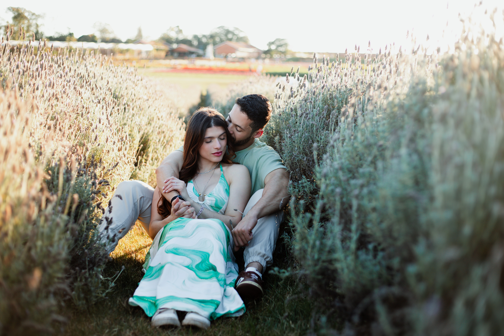

Noivado
Wesley & Beatriz
"Grandes coisas fez o Senhor por nós, por isso estamos alegres."
Nosso noivado é um testemunho dessa alegria. Com a bênção de Deus e a felicidade em nossos corações, convidamos você a celebrar conosco.

Save the Date
26 | Outubro | 2025
Local: Alameda Curitiba, 365 - Res. Doze (Alphaville), Santana de Parnaíba - SP, 06539-020